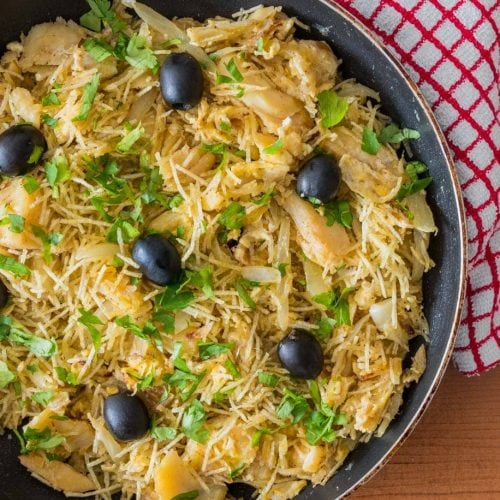

Recipe Bacalhau à Brás

Second Best Portuguese Dish
Bacalhau à Brás is a dish that perfectly reflects Portuguese cuisine. Simple in origin and preparation, the taste of this recipe is the result of good ingredients and the appreciation of their flavours.
The original recipe for Bacalhau à Brás was created by Mr. Braz, who was the owner of a local tavern in Lisbon. The dish quickly became very popular and spread inside and outside the country. Today, for example, it is common to find variations of Bacalhau à Brás in Spain which is known as Bacalhau Dourado. Also, the dish evolved for a technique, you can find a variety of dishes made “a Brás” style.
Ingredients
- 600g of dessalted codfish
- 200g of staw potato
- 6 eggs
- 1 onion - sliced
- 4 garlic cloves
- 2 bay leaves
- black olives
- olive oil
- parsley chopped
- Salt
- Black pepper
Preparation
- Heat a frying pan over low heat in olive oil and saute the onion and 2 cloves of chopped garlic;
- Add the shredded cod and cook for a few minutes;
- Add the potatoes, mixing carefully;
- In a separate bowl, beat the eggs lightly with the help of a fouet;
- Add half of the beaten eggs to the codfish stew, mixing well;
- Season with salt and black pepper to taste and let the eggs cook, always stirring the mixture;
- Turn off the heat and mix in the rest of the eggs;
- Sprinkle the dish with parsley and black olives;
- Serve it hot.